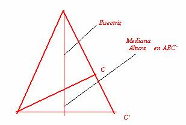

85.
| 4.- Se designa por I el incentro de un triángulo. ¿Cuáles de las siguientes afirmaciones son ciertas? Razona las respuestas: a)No existe ningún triángulo en el que I esté en el exterior b)El incentro siempre está en la altura del triángulo c)Existe un triángulo tal que I está en una de sus alturas d)Existe un triángulo tal que I está en las tres alturas e) El incentro siempre está en una mediatriz del triángulo f) Existe un triángulo tal que I está en una de sus mediatrices g) No existe ningún triángulo tal que I esté en todas sus mediatrices |
Solución de Maite y Alicia Peña Alcaraz, alumnas del Colegio Porta Celi de Sevilla:
Apartado a:
No existe ningún triángulo en el que su incentro esté en el exterior por la siguiente razón:
- La circunferencia de centro I es tangente a los tres lados de la circunferencia, es decir no corta a ninguno en ningún punto.
- Si es exterior al triángulo imaginemos que está bajo el lado a (bajo quiere decir comprendido en el ángulo A, también considero al estar en uno de los lados del ángulo), entonces para ser tangente interiormente a “a”, porque a b y c es posible que sea tangente interior, debería cortar al lado b, c o a ya que el arco que debe ser tangente queda por debajo de la recta.
Apartado b:
Falso, esto solo ocurre en los triángulo isósceles y en los equiláteros, ya que el incentro se halla en la intersección de las bisectrices y estas sólo coinciden con las alturas en caso de que el triángulo sea como hemos dicho.
Apartado c:
Queda respondido con el apartado anterior; todos los equiláteros e isósceles cumplen esta propiedad.
Apartado d:
Sí el triángulo equilátero ya que por cada dos lados iguales del triángulo, la bisectriz coincide con la altura de ese ángulo que forman los lados, luego en el equilátero se puede coger dos lados iguales tres veces consiguiendo que el incentro esté sobre las tres alturas.
Apartado e:
Al igual que en el apartado b vuelve a ser falso y esa propiedad solamente se cumple para los triángulos isósceles o equiláteros, y dicha mediatriz coincide no sólo con la bisectriz sino también con la altura.
Apartado f:
Igual que el apartado c, los isósceles y equiláteros
Apartado e:
Igual que el apartado d si existe, los equiláteros cumplen la propiedad.
